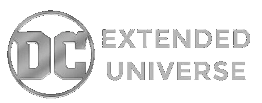
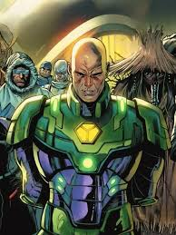
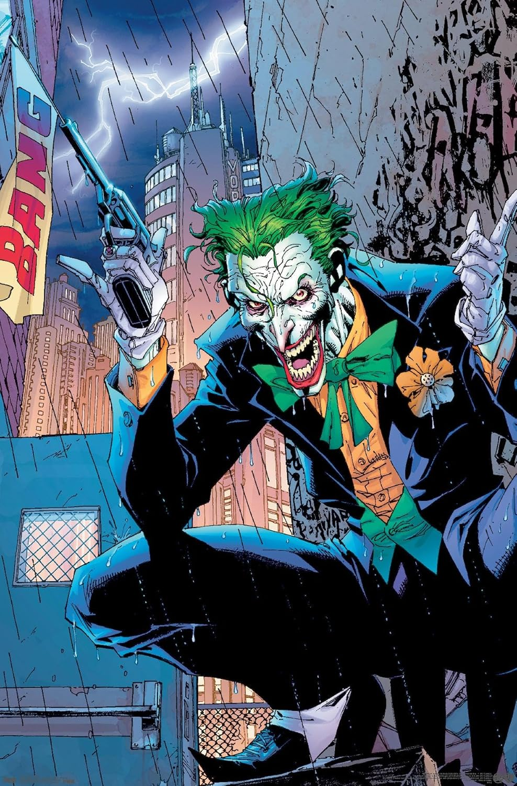
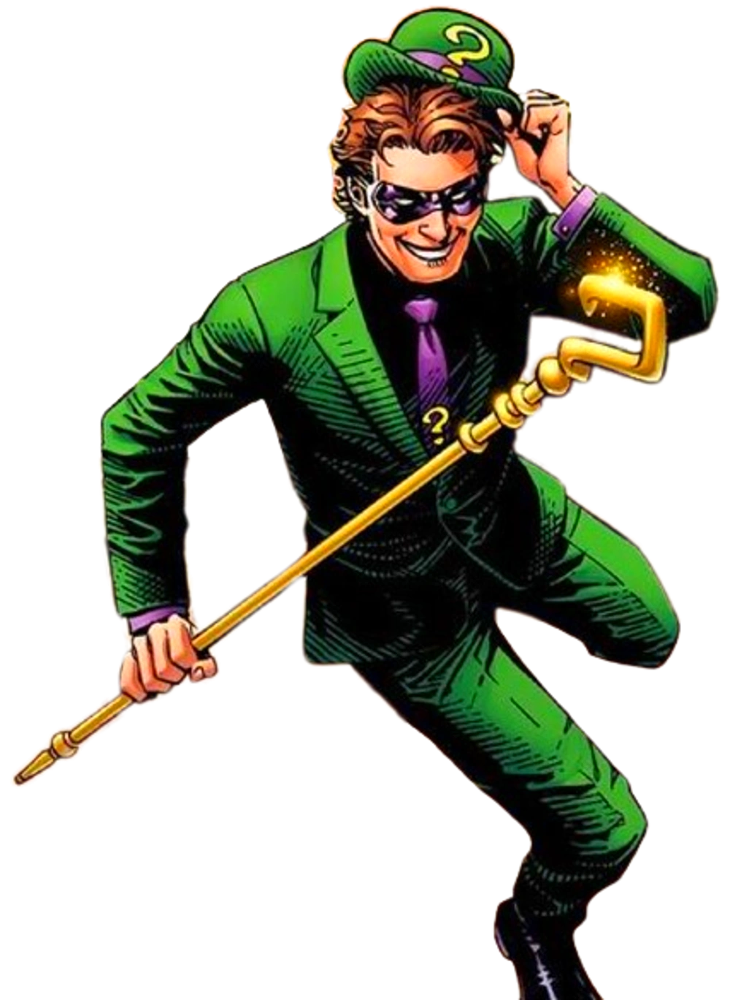
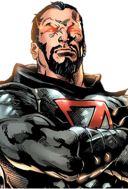
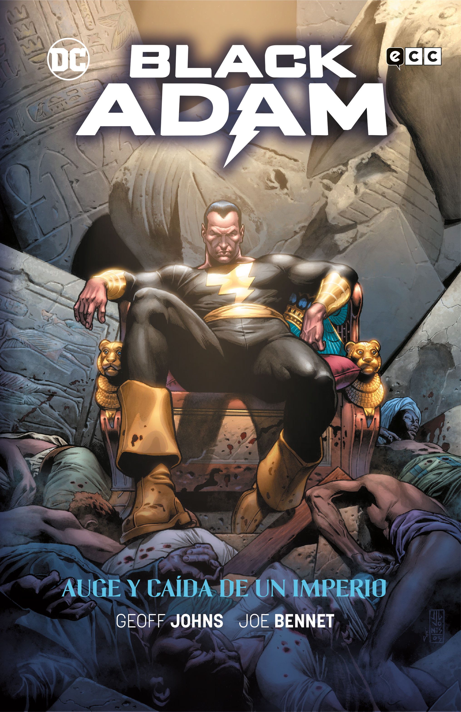
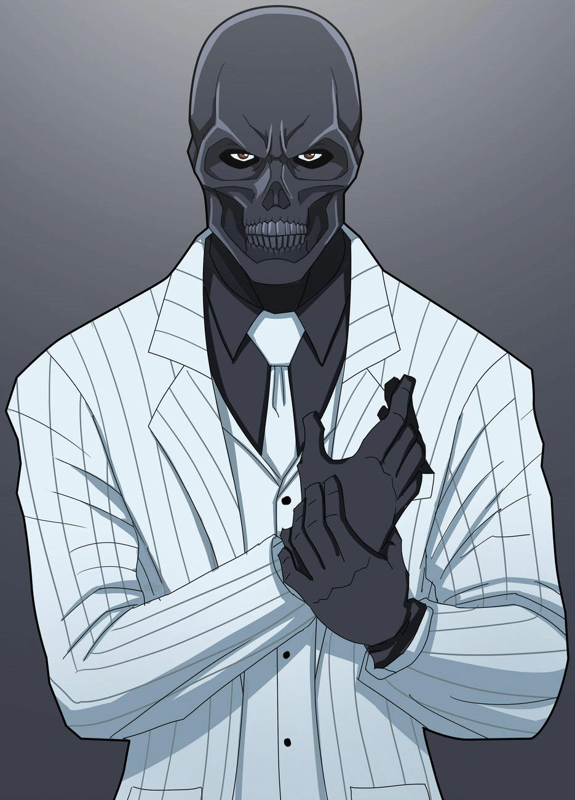
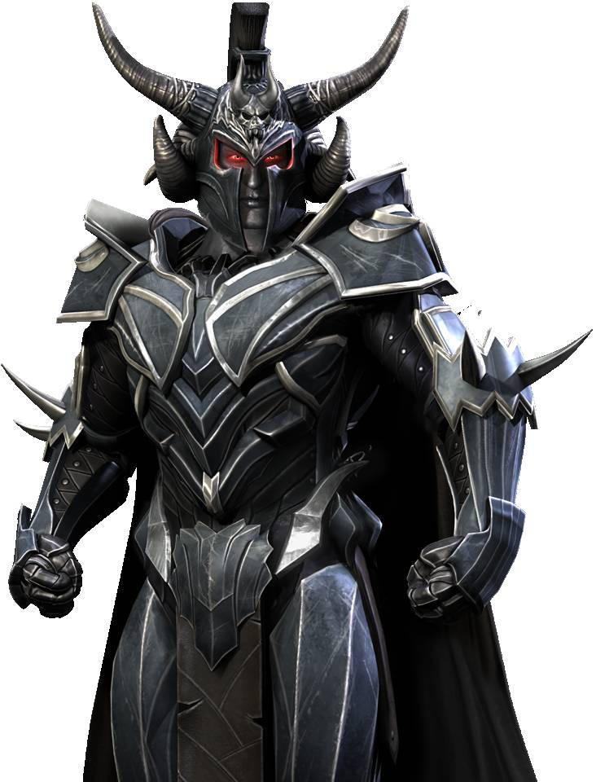
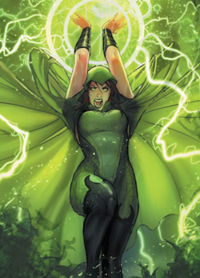

Los antagonistas que desafían a nuestros héroes
Maestros de la Mente
Villanos que usan su intelecto, manipulación y estrategia como arma principal.
Villano
Imagen
Descripción
Héroe Rival
Actor
Lex Luthor

Genio multimillonario obsesionado con el poder y la destrucción de Superman. Considera a los metahumanos una amenaza para la humanidad.
Superman
Jesse Eisenberg
Joker

Psicópata criminal con un sentido del humor retorcido. Representa el caos y la locura en Gotham City.
Batman
Jared Leto
Riddler

Asesino en serie que deja acertijos y puzzles en sus crímenes. Busca exponer la corrupción en Gotham.
Batman
Paul Dano
Seres de Poder
Antagonistas con habilidades sobrehumanas que rivalizan con los héroes más poderosos.
Villano
Imagen
Descripción
Héroe Rival
Actor
General Zod

Líder militar kryptoniano que busca recrear Krypton en la Tierra. Posee los mismos poderes que Superman.
Superman
Michael Shannon
Steppenwolf
Conquistador alienígena que busca las Cajas Madre para terraformar la Tierra y complacer a su sobrino Darkseid.
Liga de la Justicia
Ciarán Hinds
Black Adam

Antiguo esclavo que obtuvo poderes mágicos similares a Shazam. Utiliza métodos brutales para impartir justicia.
Shazam
Dwayne Johnson
Criminales Organizados
Figuras del bajo mundo que controlan el crimen organizado en sus respectivas ciudades.
Villano
Imagen
Descripción
Héroe Rival
Actor
Penguin
Oswald Cobblepot, jefe del crimen que controla el bajo mundo de Gotham. Inteligente y despiadado empresario criminal.
Batman
Colin Farrell
Black Mask

Roman Sionis, líder de la organización criminal False Face Society. Sádico y obsesionado con el poder y el control.
Birds of Prey
Ewan McGregor
Amenazas Sobrenaturales
Villanos con poderes mágicos, divinos o de origen desconocido.
Villano
Imagen
Descripción
Héroe Rival
Actor
Ares

Dios griego de la guerra que manipula a la humanidad hacia conflictos. Busca destruir la civilización humana.
Wonder Woman
David Thewlis
Enchantress

Entidad mágica antigua que posee a la arqueóloga June Moone. Posee poderes de hechicería y manipulación mágica.
Escuadrón Suicida
Cara Delevingne
El Mayor Amenaza: Darkseid
Darkseid es la amenaza definitiva del universo DC.
Dios tirano de Apokolips que busca el Anti-Life Equation para eliminar el libre albedrío en el universo.
Aunque solo ha aparecido brevemente hasta ahora, su sombra se cierne sobre todo el multiverso DC.